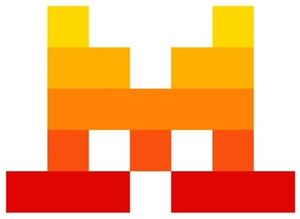

Trade Mark Journal No.2025/030 25 July 2025
WO0000001863642 (9,35,42)
Office of origin: France
Date of International Registration:23 January 2025
Date of designation in the UK:
23 January 2025

International priority date claimed: 14 January 2025
(France)
(5112316)
- Class 9
- Downloadable software and downloadable computer programs; downloadable software for artificial intelligence, learning, language generation, data mining and predictive analytics; downloadable artificial intelligence computer software and programs, namely, software for developing, executing and analyzing algorithms; downloadable computer software and programs using artificial intelligence for processing, generating, understanding and analyzing data; downloadable software for testing artificial intelligence algorithms and programs; downloadable software for simulating, modeling and processing data for analyzing, interpreting and editing data, predictive analytics and graphics design; downloadable software for integrating information and data, for analysis, management, collaboration, exploration, modeling, export, visualization, organization, modification, transmission, storage, exchange, sharing, querying, verification, collection, editing, hosting, security and tracking of data and information; downloadable software for language and speech processing based on machine learning; downloadable software for data and information management and transmission; downloadable software that can be integrated into third-party platforms, marketplaces, websites and online services; downloadable software for processing images, graphics and text; downloadable intelligent character recognition software; downloadable software and downloadable computer programs for image recognition and generation; downloadable software using blockchain technology; downloadable software and applications for mobile devices.
- Class 35
- Consulting and analysis with respect to processing of commercial information and data in the field of artificial intelligence; commercial analysis and compilation of statistical data intended for research; commercial data analysis and producing market analysis reports.
- Class 42
- Software as a Service (SaaS); Software as a Service (SaaS) using artificial intelligence for data processing, generation, understanding and analysis; temporary provision of computer programs online for artificial intelligence; providing non-downloadable software for artificial intelligence, machine learning, natural language generation, data mining, predictive analytics; software as a service (SaaS) that can be integrated into third-party online platforms, online marketplaces, websites and online services; providing non-downloadable software for processing, storage, input, collection, validation, security, management, integration and mining of data and information; providing online non-downloadable software for simulation, modeling and processing of data for analysis, mining and interpretation of data and predictive analytics; providing non-downloadable application programming interface (API) software; providing online non-downloadable software for developing, executing and analyzing algorithms; providing non-downloadable software online based on machine learning; providing online non-downloadable software for sharing data for machine learning, predictive analytics and language model construction; software as a service (SaaS) for processing images, graphics and text; research and development services in the field of artificial intelligence; designing, researching and developing computer software and programs; technological advice in the field of artificial intelligence; advice with respect to artificial intelligence; software rental; research and development of new products for third parties; technological research; electronic data storage; advice regarding information technology; computer system design; server hosting; cloud computing; programming for computers; application service provider (ASP).
Mistral AI
Representative: Monsieur Jestaz Louis Blanche Avocats, 43 rue Blanche, F-75009 Paris, FRANCE